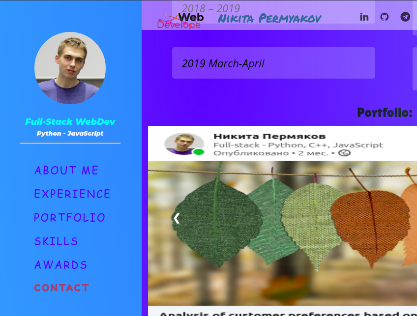

Portfolio
last works



I am interested primarily in neural networks and web development, I want to become a professional in one of these areas. I believe that only an internship at the company will give me invaluable experience with which you can work without a doubt, applying all the accumulated knowledge and acquiring new ones in your team. I want to be able to solve the necessary tasks. I am pleased to know that the script written by me is used by people, and other developers read my comments in the code.
Conducted functional testing, interaction testing, security and user interface design. He made bug reports, made up checklists and test cases (he was involved in test design). I tested such products as Odnoklassniki, my circle, instagram. Used site parsing, traffic sniffing, reducing the dimension of test data. Used fat live charles.
Performed tasks on writing complex SQL queries, (up to two selects). He was engaged in automation and unit testing for Python. worked in internal systems of the bank.
I independently developed a software product in a short time (there were also long-term projects and teamwork, but in smaller quantities). I proceeded in most cases from the task, raised the question not “as I can,” but “as needed”. Some projects are not subject to disclosure. The projects are aimed at applying machine learning, introducing new systems into the market, and integrating into existing solutions. More information about some projects is written in the articles on Linkedin by the link.
I carry out unit tests, functional, implement automation. I am on a trial period, and the project is close to completion :(. But the team and the project are cool :)
Apart from being a web developer, I enjoy most of my time being outdoors. In the winter, I am an avid skier and novice ice climber. During the warmer months here in Colorado, I enjoy mountain biking, free climbing, and kayaking.
When forced indoors, I follow a number of sci-fi and fantasy genre movies and television shows, I am an aspiring chef, and I spend a large amount of my free time exploring the latest technology advancements in the front-end web development world.